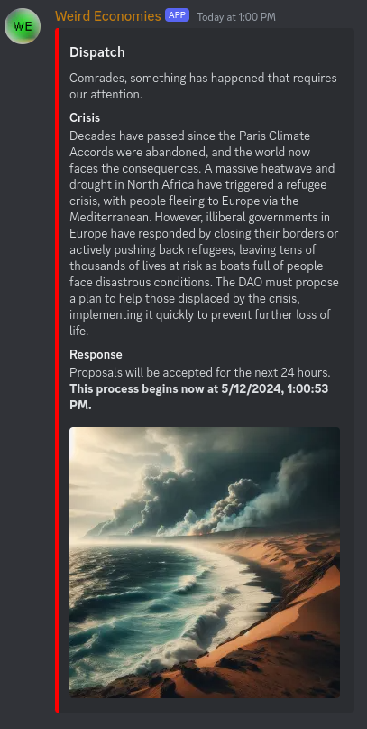
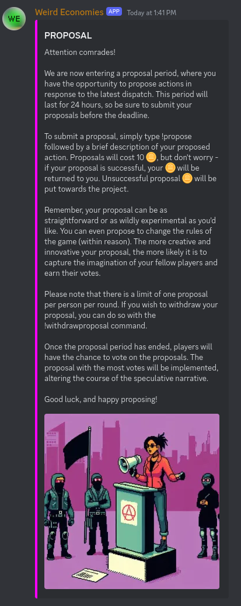
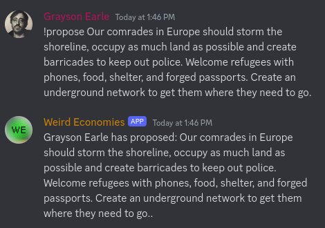
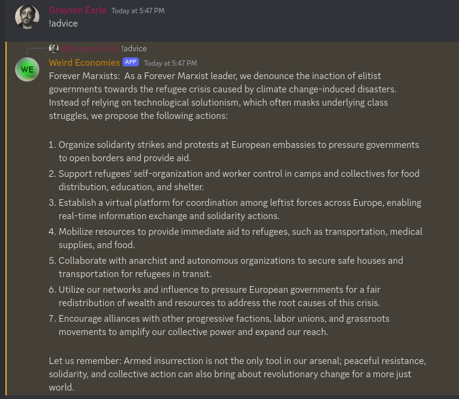
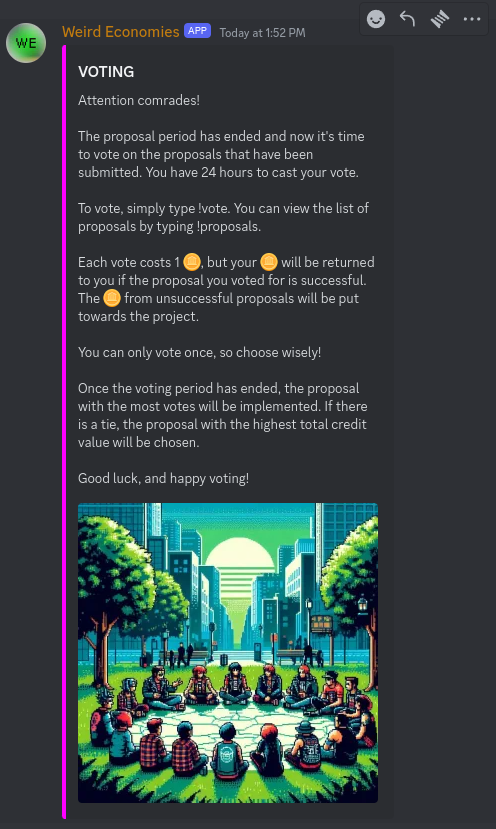

how to play
The game takes place on the Discord server, in the #scrivener-game channel.
To begin, type !join

To get a list of commands you can type !howto

The game has two complete cycles per week. This means that each Sunday and Wednesday there will be a Dispatch, which is either a crisis or an opportunity to which you must respond. This begins the Proposals phase during which you can make proposals on how to respond. 24 hours later (for example, Monday at 6pm CET) will begin the Voting phase during which you can vote on the proposals which have been made by the players. This lasts for 24 hours until the next day (for ex, Tuesday at 6pm CET), when the votes will be tallied and the winning proposal is announced. Hours later, the game will make a determination as to what happens in the game world and informs the players. Whatever happens will become part of the story moving forward, so any world-changing proposals will be taken into consideration; if you take occupy the UN headquarters, this will have repercussions moving forward.
The schedule operates as follows
- Sunday 6pm CET: crisis/opportunity
- Sunday 6pm CET: Proposals (24 hours)
- Monday 6pm CET: Voting
- Tuesday 6pm CET: Results
- Wednesday 6pm CET: dispatch
- Wednesday 6pm CET: Proposals begin
- Thursday 6pm CET: Voting begins
- Friday 6pm CET: Results
Dispatches
Dispatches are the starting point for each cycle. They are either a crisis or an opportunity. A crisis is a negative event that requires a response, such as a natural disaster. It will look like this:
Each Dispatch is immediately followed by a Proposals phase.
Proposal phase
The Proposal phase starts with an image like this:
During the Proposal phase you can type !propose followed by your proposal. For example, if you want to propose that your faction occupy the UN headquarters, you would type:
!propose Occupy the UN headquarters
You can also type !proposals to see a list of all the proposals that have been made.
During the Proposals period you can type !advice to ask your faction for inspiration on what to propose
Voting phase
This phase begins with an image like this:
